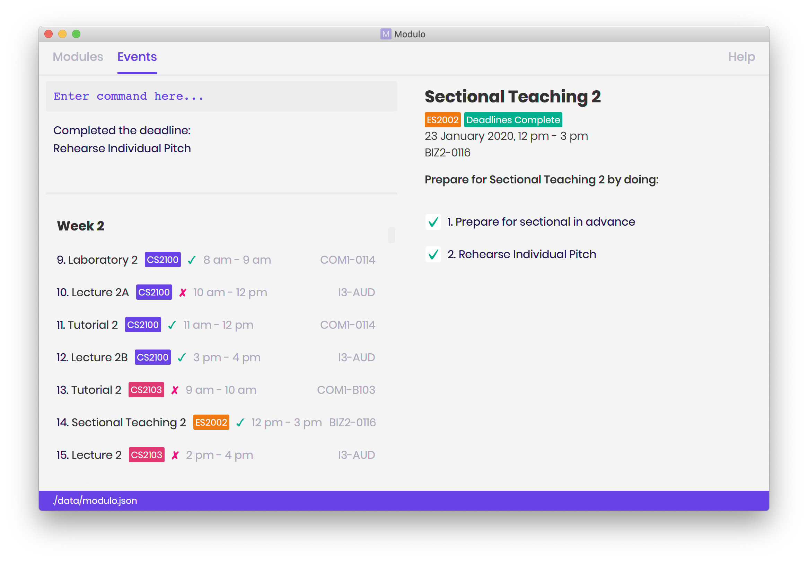

By: Team Modulo Since: Feb 2020 Licence: MIT
- 1. Introduction
- 2. Quick Start
- 3. Features
- 3.1. Viewing help :
help - 3.2. Adding a module:
module - 3.3. Adding an event :
event - 3.4. Adding a deadline :
deadline - 3.5. Displaying all events and modules:
list / modulo - 3.6. Displaying all events based on timeframe:
today / tomorrow / this week / next week / this month / MMM (e.g. Mar) - 3.7. Find event/module/deadline [keywords]:
find - 3.8. Finishing a task :
done - 3.9. Export:
export - 3.10. Deleting a module/event/deadline:
delete - 3.11. Importing a Calendar:
import - 3.12. Viewing current events/deadline for module :
view - 3.13. View module details :
view - 3.14. Encrypting data files
[coming in v2.0]
- 3.1. Viewing help :
- 4. FAQ
1. Introduction
Modulo is for those who prefer to use a desktop app for managing their school work on a modular level. It helps you to break down your modules into deadlines and track their progress. More importantly, Modulo is optimized for those who prefer to work with a Command Line Interface (CLI) while still having the benefits of a Graphical User Interface (GUI). If you can type fast, Modulo can get your module management tasks done faster than traditional GUI apps. Interested? Jump to Section 2, Section 2, “Quick Start” to get started. Enjoy!
2. Quick Start
-
Ensure you have Java
11or above installed in your Computer. -
Download the latest
modulo.jarhere. -
Copy the file to the folder you want to use as the home folder for Modulo.
-
Double-click the file to start the app. The GUI should appear in a few seconds.
 -
Type the command in the command box and press Enter to execute it.
e.g. typinghelpand pressing Enter will open the help window. -
Some example commands you can try:
-
modulen/CS2103 y/2020 s/2: add new module -
today: view deadlines due today -
exit: exits the app
-
-
Refer to Section 3, “Features” for details of each command.
3. Features
Command Format
-
Words in
UPPER_CASEare the parameters to be supplied by the user e.g. inmodule n/NAME,NAMEis a parameter which can be used asmodule n/CS2103. -
Items in square brackets are optional e.g
list [m/MONTH]can be used aslist m/Julyor aslist. -
Items with
… after them can be used multiple times including zero times e.g.[m/MONTH]…can be used asm/JULY,m/JULY m/MARCHetc. -
Parameters can be in any order e.g. if the command specifies
m/MODULE n/NAME,n/NAME m/MODULEis also acceptable.
3.1. Viewing help : help
Format: help
3.2. Adding a module: module
Adds a module to Modulo.
The default timeframe is set to the current academic year, AY19/20.
Format: module n/NAME
Example:
-
module n/cs2103
3.3. Adding an event : event
Adds an event to a module Format: event m/MODULE n/NAME t/TIME f/FREQUENCY
Autopopulated based on keyword detection, e.g. Tutorials added for weekly will be populated from Week 3-13, and will have numbers automatically appended, e.g. Tutorial 1, Tutorial 2. A default deadline will also be added to the event, e.g. Tutorial Homework
3.4. Adding a deadline : deadline
Adds a deadline to an event.
Format: deadline m/MODULE e/EVENT NAME n/DESCRIPTION [r/YES/NO]
Examples:
-
deadline m/CS2103 e/Tutorial n/Homework r/NO
Adds a Homework deadline to the nearest upcoming tutorial of CS2103
3.5. Displaying all events and modules: list / modulo
Shows a list of modules in the modulo view.
Format: list / modulo [m/MONTH]
Examples:
-
list m/AUGUST
Returns all tasks in August
3.6. Displaying all events based on timeframe: today / tomorrow / this week / next week / this month / MMM (e.g. Mar)
Shows a list of events happening today or anytime during the timeframe requested
Format: today / tomorrow / this week / next week / this month / MMM
Examples:
-
today
Shows a list of events happening today -
this week
Shows a list of events happening this week -
august
Shows a list of events happening in August
3.7. Find event/module/deadline [keywords]: find
User able to find module which matches any of the given keywords.
-
The search is case insensitive. e.g tutorial will match Tutorial
-
The order of the keywords does not matter. e.g. 3 Tutorial will match Tutorial 3
-
Names containing part of the searched words will be matched e.g. tut will match Tutorial 4
Format: find m/MODULE_CODE
Return registered modules that match module
Format: find d/Deadline
Return matched deadline
3.8. Finishing a task : done
If the user is currently not viewing an event or is not viewing the event of interest, the following format will be used: and bring the closest event to focus e.g. Tutorial 4 happening on Week 6, where the UI will prompt the user: “Which deadline do you wish to complete?”
Format: done m/MODULE_CODE n/EVENT_NAME
The following command can then be used (or be used instantly should the user already be viewing the event of interest): and complete the first deadline on the list of deadlines for that event.
Format: done 1
3.9. Export: export
User could export all the module, event, and deadlines as a .ics file.
Format: export [s/START_DATE] [e/END_DATE] [d/TARGET_DIRECTORY] f/FILENAME
3.10. Deleting a module/event/deadline: delete
Deletes a module and all its associated events.
The UI will display the event of interest and prompt: Delete event or delete one of its deadlines?
Format: delete m/MODULE_CODE [n/EVENT_NAME]
The following formats can be used:
In all cases, the UI will confirm with the user. The user can then follow up with:
3.11. Importing a Calendar: import
Imports an .ics file to be parsed.
Imports all .ics files within the import directory (if no directory is specified, the default directory will be searched).
If filename is specified, only the selected one will be imported.
Files will be moved to archive once imported.
Format: import [d/DIRECTORY] [f/FILENAME]
3.12. Viewing current events/deadline for module : view
Lets user view a specific event.
If more than one event fits the criteria, the UI will display the closest event with the greatest match.
Format: view m/MODULE_CODE n/EVENT_NAME
3.13. View module details : view
User able to view details about a specific module (and recurring lectures, tut, lab).
Format: view m/MODULE_CODE
3.14. Encrypting data files [coming in v2.0]
{explain how the user can enable/disable data encryption}
4. FAQ
Q: How do I transfer my data to another Computer?
A: Install the app in the other computer and overwrite the empty data file it creates with the file that contains the data of your previous Address Book folder.